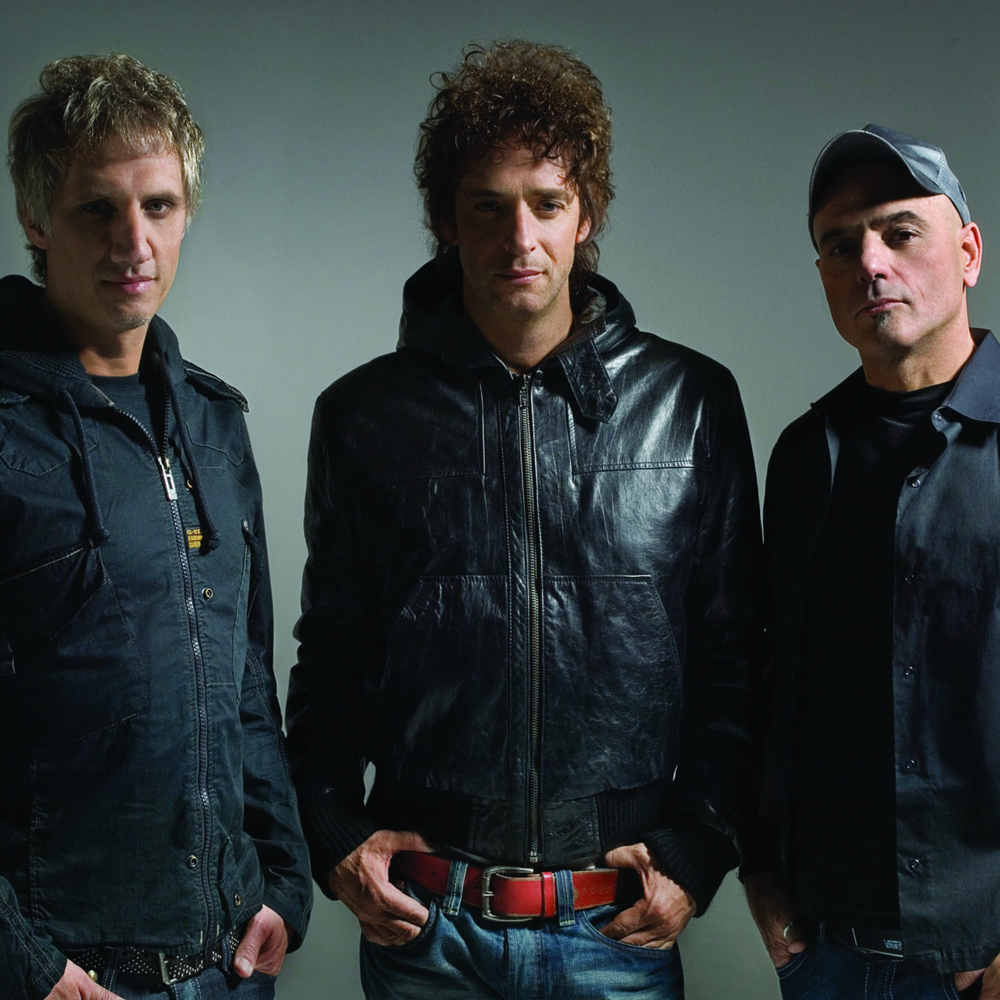
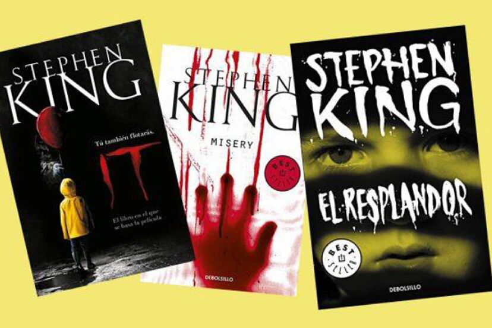
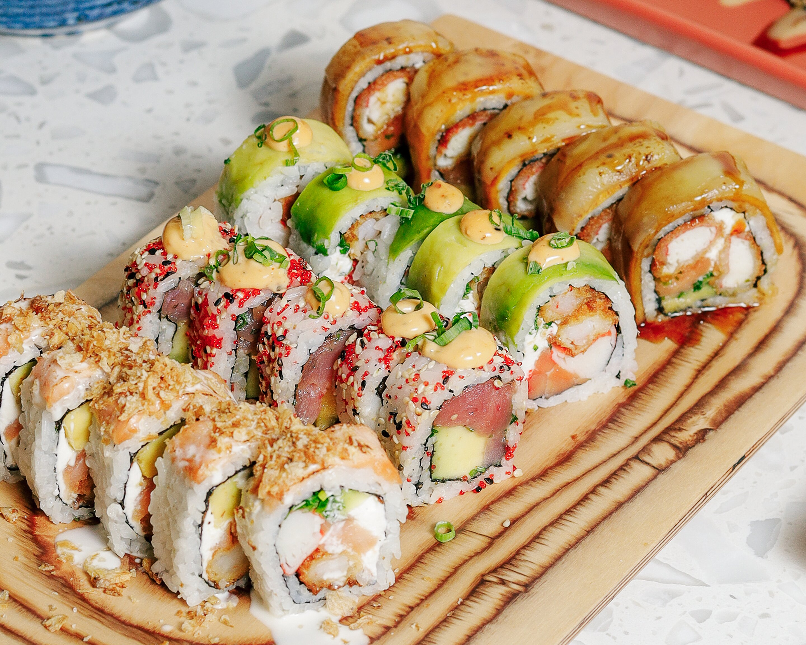

- Soda Stereo: Banda de rock en español originaria de Argentina, muy influyente en América Latina durante los años 80 y 90.

- The Smiths: Banda de rock alternativo británica de los 80, conocida por su estilo melancólico y las letras de Morrissey.

- Stephen King: Escritor estadounidense famoso por sus novelas de terror, suspenso y fantasía.

- Sevilla : Ciudad en el sur de España, conocida por su cultura, historia, arquitectura y tradiciones como el flamenco.
- Sushi: Comida japonesa a base de arroz adobado con vinagre, combinado con pescado, mariscos o vegetales, generalmente crudos o cocidos.
